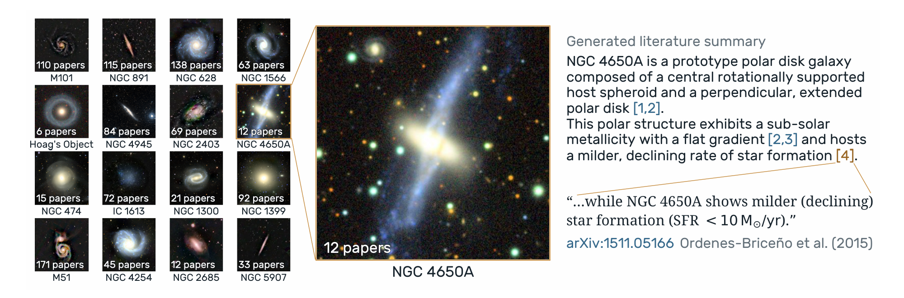

銀河について論じた箇所を集める
KoblischkeとBovyが試みたのは、この手間のかかる作業を言語モデルに分担させることだった。対象はarXivの天文学分野に登録された約15万6000本の論文。AIエージェントが論文本文を調べ、個々の銀河について3文以上で実質的な議論がなされている箇所を探す。その部分の引用と短い要約を取り出し、元論文へのリンクとともに整理する。
ここで扱っているのは、銀河の数を数える作業より少し奥にある問題だ。たとえば論文中に「M51」という文字列が現れることと、「M51で観測された現象を、著者がどう解釈したか」を知ることには大きな距離がある。この研究は、その間を埋めようとしている。
著者らによれば、対象のうち1万8641本の論文から4万4332件の議論が抽出され、天球上の位置情報などを使って1万3616個の銀河にまとめられた。公開された「GalaxyWiki」では、銀河ごとに関連する論文の記述を確認し、原著へ移動できる。検索結果の一覧から、実際の議論を読む場所へと入口を近づけた仕組みである。


図を選ぶと原寸画像を開けます。
引用の一致と銀河の同定を確かめる
このようなデータベースで最も気になるのは、AIが何を正しい情報として結び付けたかである。銀河には別名があり、同じ略号が違う天体を指す場合もある。論文に記された位置と外部の天体データベースを照合する段階にも誤りが入り得る。抽出した文章が原著に存在することと、その内容が正しく要約され、正しい天体に対応付けられていることは、それぞれ独立に確かめる必要がある。
著者らは、原文引用との照合や人手による標本の確認など、検証の手順も設けた。一方、調査対象となった論文の範囲、１論文から拾う銀河の上限、別名や位置の解決方法によって、取りこぼしも生じる。公開件数は、研究チームが今回の条件で得た集計値として読むのが適切だ。
GalaxyWikiの着想は、銀河以外の天体にも広がる。あるメーザー源について、これまでに誰が何を観測し、どんな解釈を示してきたのか。名前の一覧に、研究の文脈まで結び付けられれば、文献データベースは研究者の記憶を支える道具へ近づいていく。